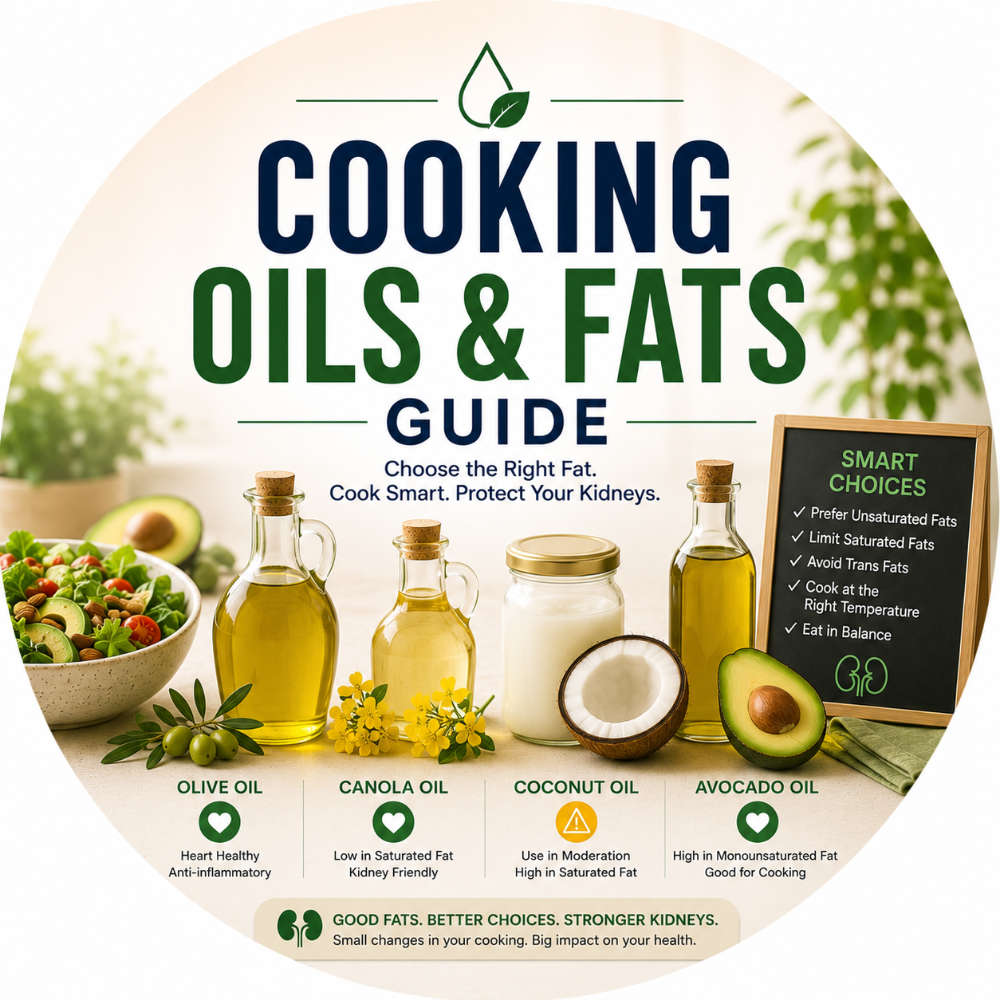
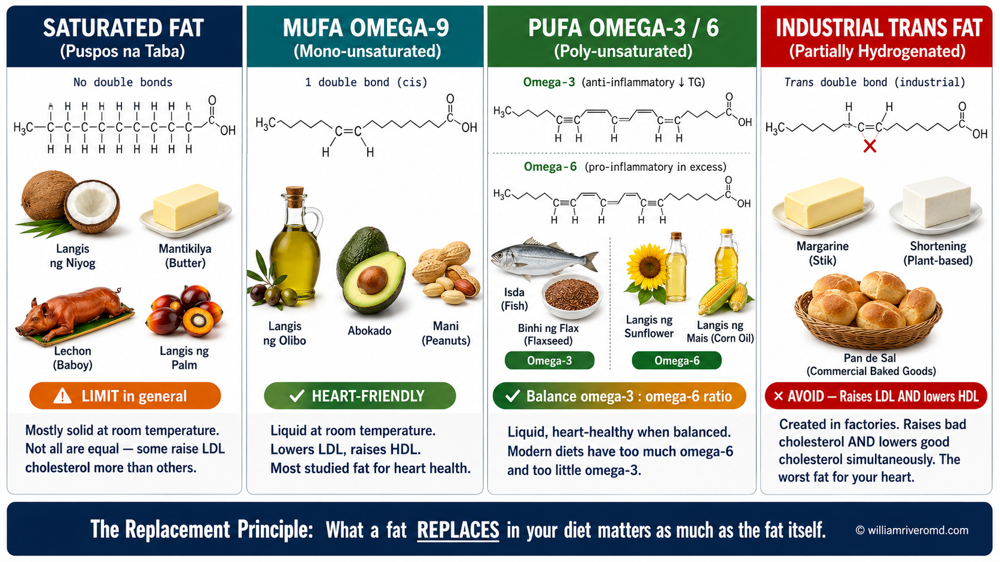
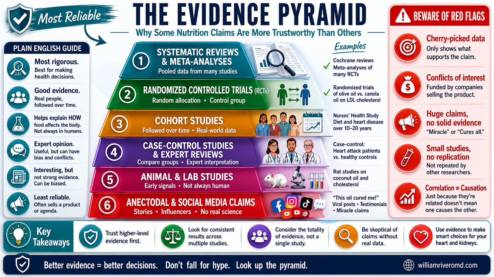
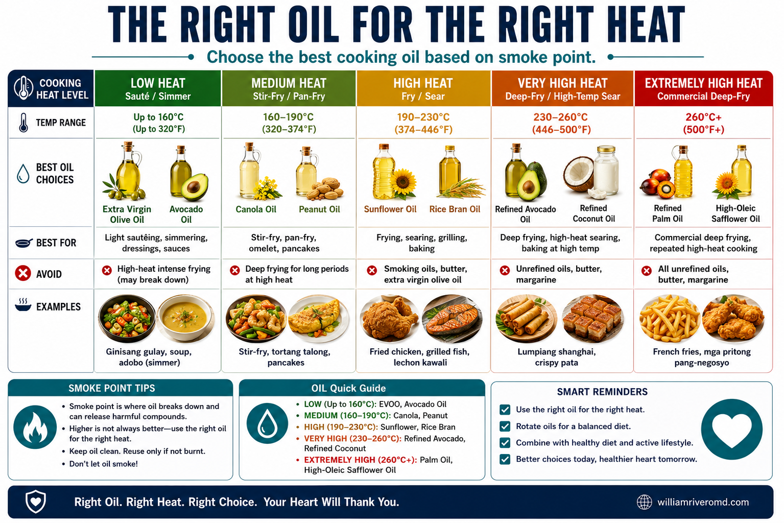
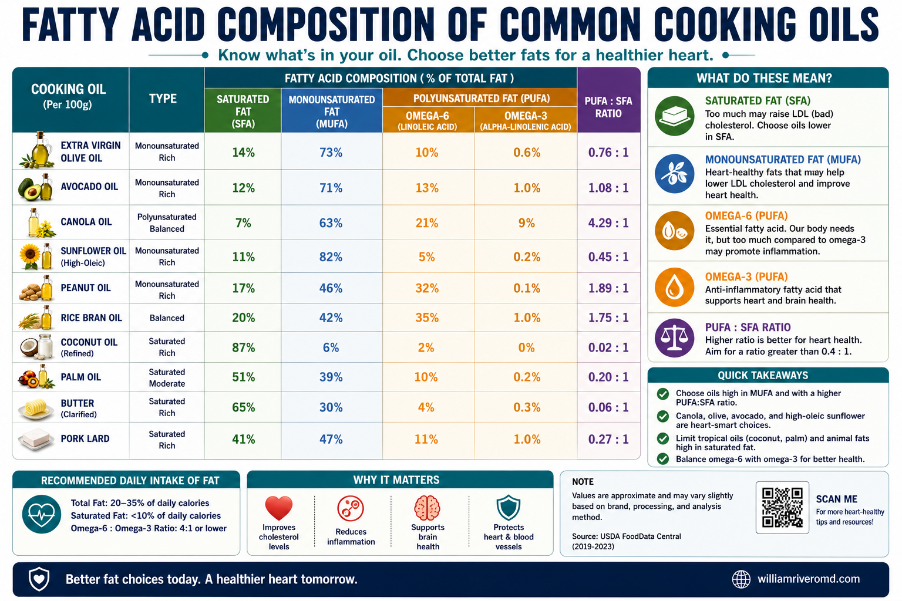
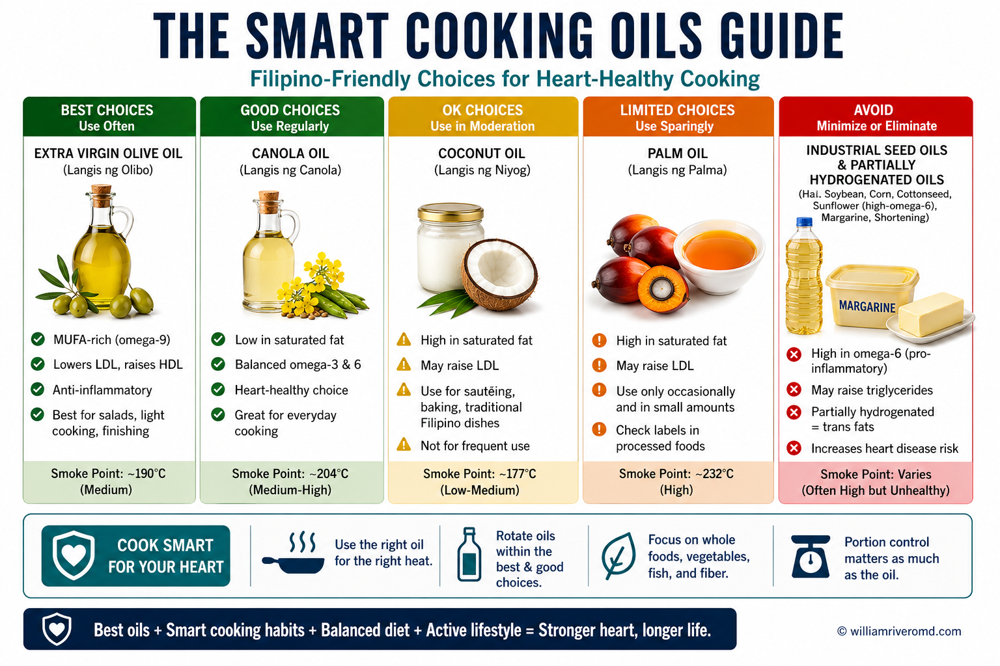
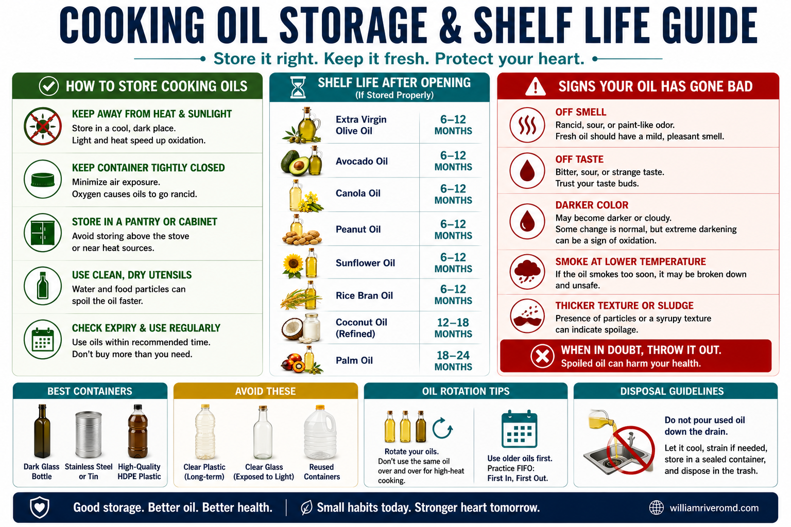

W Rivero, MD, FPCP, DPSN
Specialist in Internal Medicine, Nephrology, and Clinical Nutrition. Practicing integrative and evidence-based nephrology across Quezon City, Pampanga, and Bulacan.

Scan and save
Olive oil, coconut oil, lard, tallow — the internet has opinions on all of them. This guide cuts through the noise with real peer-reviewed science, calibrated for Filipino patients, with special guidance for CKD, diabetes, and heart disease.

Before comparing oils, you need to understand what you're comparing. The type of fat — not just the amount — drives whether an oil helps or harms your health over time.[1]

Solid at room temperature. Found in animal fats and tropical oils. Not all equal — stearic acid (C18:0) is LDL-neutral; palmitic (C16:0) and lauric (C12:0) reliably raise LDL.[2]
⚠ Limit in generalMonounsaturated. Liquid at room temp, stable for cooking. Dominant in olive oil, avocado, canola. Lowers LDL, raises HDL, anti-inflammatory.[3]
✓ Heart-friendlyPolyunsaturated, anti-inflammatory. Found in fish, flaxseed, and canola oil. Reduces triglycerides. Most deficient fat in the modern Filipino diet.[3]
✓ Anti-inflammatoryPro-inflammatory in excess. Abundant in sunflower, corn, soybean oils. Modern Filipino diets have a ratio of ~15:1 omega-6 to omega-3; the healthy target is <4:1.
⚠ Balance with omega-3Created by partial hydrogenation. Raises LDL and lowers HDL simultaneously — the uniquely worst fat category. Found in stick margarine, shortening, commercial bakery goods.[3]
✗ Avoid entirelyFound in dairy and red meat (vaccenic acid, CLA). Unlike industrial trans fats, these are not harmful — CLA from grass-fed dairy has anti-atherogenic properties.
~ Not harmfulThe "delivery truck" — carries cholesterol into artery walls. Elevated LDL forms plaques. Target depends on your overall cardiovascular risk.
The "garbage truck" — removes cholesterol from artery walls back to the liver. Higher is generally protective, but not all HDL-raising effects are equal.
Fat in the blood — often elevated by excess refined rice, sugar, and alcohol more than by dietary fat itself. Target <150 mg/dL.
Temperature where an oil begins breaking down into toxic oxidized compounds. Critically important for high-heat Filipino cooking methods.
LDL damaged by free radicals — the form that actually builds up in arteries and initiates plaque. Antioxidants in EVOO and rice bran oil specifically prevent this.
"Plaque-forming." A fat is atherogenic if it promotes cholesterol buildup in blood vessel walls — the underlying mechanism of most heart attacks and strokes.
What matters most is not just which fat you eat, but what that fat replaces. Replacing butter with olive oil = strong CV benefit. Replacing olive oil with coconut oil = harm. Replacing vegetables with deep-fried food = net harm regardless of oil type. Dietary pattern always outweighs any single food choice.[3]
Not all evidence is equal. A viral post, a mouse study, and a 50,000-person clinical trial carry very different weight. Understanding this hierarchy protects you from being misled by trending health claims.

Strongest evidence at top. Most viral oil claims come from the bottom two tiers.
Extra virgin olive oil has been tested in 50+ randomized controlled trials — including the landmark 7,447-patient PREDIMED trial.[4] Beef tallow has almost no human RCT data. Coconut oil's brain health claims come almost entirely from animal studies. The number and quality of studies matters before you change what you cook with daily.
| Oil / Fat | RCTs & Meta-analyses | Cohort Data | Confidence |
|---|---|---|---|
| Extra Virgin Olive Oil | 50+ RCTs; multiple meta-analyses[1,4] | Mediterranean cohorts, 100,000+ | ★★★★★ |
| Canola Oil | Multiple RCTs[5] | 521,000-person prospective study | ★★★★ |
| Rice Bran Oil | Multiple RCTs; Dec 2024 meta-analysis[6] | Limited long-term cohort | ★★★★ |
| Avocado Oil/Fruit | Several RCTs; 2024–25 umbrella review[7] | Limited | ★★★½ |
| Sesame Oil | Small RCTs; 2025 GRADE meta-analysis[8] | Very limited | ★★★ |
| Palm Oil | Many RCTs — unfavorable vs. MUFA/PUFA[9,14] | Some cohort — adverse signal | ★★ ↑LDL |
| Coconut Oil | Few small RCTs; 2024 meta-analysis[10] | No hard CV outcome RCTs | ★★ weak |
| Butter | Many RCTs (as comparator)[2] | LDL-raising confirmed | ★★ ↑↑LDL |
| Beef Tallow | Very few; mostly mechanistic[11] | No long-term data | ★ insufficient |
| Stick Margarine | Many — consistently harmful[3] | Large cohort — adverse | ★ harmful |
| Plant Sterol Spread | Multiple RCTs — 7–15% LDL reduction[12] | Moderate support | ★★★★ therapeutic |
Every major oil and fat ranked by evidence strength and cardiovascular health impact. Philippine availability and smoke points included for practical use.

For most Filipino patients, rice bran oil (Doña Elena, King brand, ~₱150–200/L) offers the best combination of evidence quality, affordability, local availability, and functional cooking properties. Its unique γ-oryzanol compound blocks intestinal cholesterol absorption through the same mechanism as the drug ezetimibe — but as a food. High smoke point (232°C) is ideal for ginisa, stir-fry, and everyday Filipino cooking.[6]
| Oil / Fat | Tier | Dominant Fat | Smoke Pt. | Philippine Availability |
|---|---|---|---|---|
| Extra Virgin Olive Oil | 🟢 Best | MUFA + polyphenols | 190°C | Common; imported |
| Avocado Oil | 🟢 Best | MUFA + lutein, phytosterols | 270°C | Available; premium |
| Rice Bran Oil ⭐ PH Pick | 🟢 Best | MUFA + γ-oryzanol, tocotrienols | 232°C | Local brands; affordable |
| Olive Pomace Oil | 🟩 Good | MUFA + squalene, triterpenes | 238°C | Common; imported |
| Canola Oil | 🟩 Good | MUFA + ALA (plant omega-3) | 204°C | Widely available |
| Sesame Oil | 🟩 Good | PUFA + sesamin/sesamol lignans | 210°C | Common; use as finishing oil |
| Peanut Oil | 🟩 Good | MUFA + PUFA + resveratrol | 232°C | Common; watch allergies |
| Sunflower / Corn Oil | 🟡 Moderate | PUFA-heavy (omega-6) | 227–232°C | Very common; varies in price |
| Soybean / Vegetable Oil | 🟡 Moderate | PUFA + trace ALA | 232°C | Very common; affordable |
| Palm Oil | 🟠 Limit | SFA (palmitic) + MUFA | 235°C | Very common; hidden in processed food |
| Lard (Mantika ng Baboy) | 🟠 Limit | SFA + MUFA (oleic-rich) | 190–215°C | Common; traditional cooking |
| Beef Tallow (Taba ng Baka) | 🟠 Limit | SFA (palmitic + stearic) + MUFA | 250°C | Less common; specialty use |
| Butter | 🟠 Limit | SFA (palmitic + myristic) highest SFA | 150°C | Common |
| Ghee | 🟠 Limit | SFA + CLA + Vitamins A/D/K2 | 250°C | Specialty stores |
| Coconut Oil (Langis ng Niyog) | 🟠 Limit | SFA (lauric acid ~42%) highest SFA % | 177–232°C | Very common; culturally significant |
| Stick Margarine / Shortening | 🔴 Avoid | Industrial trans fats + SFA | — | Common; hidden in bakery goods |
| Repeatedly Reheated Oil | 🔴 Avoid | Oxidized lipids (any oil) | — | Common in carinderia, street food |
| Plant Sterol Spread (Becel Pro-activ) | 🟣 Therapeutic | PUFA + 2g plant sterols/day | Low heat | Specialty stores / online |
Tap each entry to expand the full science, practical guidance, and Philippine-specific context. Evidence ratings reflect number and quality of human studies.

Look for "Extra Virgin" specifically — not "pure olive oil" (a refined blend). Use for dressings and finishing; use olive pomace for frying.
For patients with specific conditions, oil selection becomes part of medical management — not personal preference. The wrong fat choice can work directly against your medications.

CKD patients carry a cardiovascular mortality risk 10–20× higher than the general population. Cardiovascular disease is the leading cause of death in ESKD. Every modifiable risk factor — including dietary fat — carries additional clinical weight in this group.
Certain fats directly affect insulin sensitivity and glucose metabolism — independently of carbohydrate intake. For patients managing pre-diabetes, type 2 diabetes, or metabolic syndrome, fat choices carry additional metabolic implications.
If your doctor has given you an LDL target (e.g., <55 mg/dL), your cooking oil becomes part of your cardiovascular treatment plan. Every 10 mg/dL LDL reduction translates into measurable reduction in cardiovascular events. The wrong oil can partially neutralize your statin.[11]
Very low-fat diets in elderly patients impair absorption of vitamins A, D, E, and K, worsen muscle mass loss, and may reduce energy intake below requirements. Fat quality — not elimination — is the goal.
Science is only useful when it fits your real kitchen. Here's how to apply evidence-based fat choices to actual Filipino cooking methods, cost realities, and label reading.

Approximate Metro Manila grocery prices. Vary by retailer and province.
Answer four questions to receive a personalized oil recommendation based on your health profile and kitchen needs.
Personalized recommendation — not a substitute for your physician's advice
Answer all four questions, then tap the button for your recommendation. This tool provides general guidance only — always discuss dietary changes with Dr. Rivero or your primary care physician.
Your profile suggests relatively lower cardiovascular and metabolic risk. Your goal is long-term prevention. You have flexibility:
Avoid regardless: Stick margarine, shortening, and repeatedly reheated oil.
One or more moderate risk factors. Your oil choices should actively support your treatment goals:
Avoid: Coconut oil as a daily cooking fat, palm oil, butter as a cooking fat, stick margarine.
CKD and/or diabetes combined with cardiovascular risk means your oils interact directly with your medications:
Strictly avoid: Coconut oil · palm oil · butter · lard · tallow · stick margarine.
Your combination places you in the highest clinical risk category. Oil choice is an active part of your cardiovascular treatment plan:
Please bring this guide to your next appointment for a personalized dietary fat review alongside your current medications and LDL targets.
This tool is for general educational guidance only. It does not constitute medical advice and does not replace assessment by a licensed physician. Results are based on general population evidence and may not apply to your specific situation.
If you remember nothing else from this guide, remember these five principles.
The best oil in the world cannot undo a diet full of refined carbohydrates, processed meats, high sodium, and sugar. No oil is a cure; no oil is a poison in isolation. Context always wins.
The tablespoon of oil you cook with at home is far less dangerous than the palm oil in your instant noodles, the trans fats in your bakery pandesal, and the repeatedly reheated oil at your local carinderia. Start with the hidden sources first.
Affordable (~₱150–200/L), locally available, high smoke point, and contains γ-oryzanol — a compound that blocks cholesterol absorption through the same mechanism as the drug ezetimibe. For most patients, this is the most practical switch worth making.[6]
Stearic acid (in tallow and lard) is LDL-neutral — that is true. But palmitic acid — the dominant SFA in palm oil, lard, tallow, butter, and coconut oil — reliably raises LDL by impairing the liver's ability to clear it from the blood.[2,16]
Using coconut oil daily while taking a statin to lower LDL is working against yourself. The right oil supports your medication. The wrong oil partially neutralizes it. Bring this guide to your next appointment and discuss it with your physician.[11]
All numbered inline citations link to the source below. References ordered by first appearance in the guide.
Specialist in Internal Medicine, Nephrology, and Clinical Nutrition. Practicing integrative and evidence-based nephrology across Quezon City, Pampanga, and Bulacan.
Scan and save